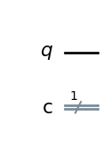
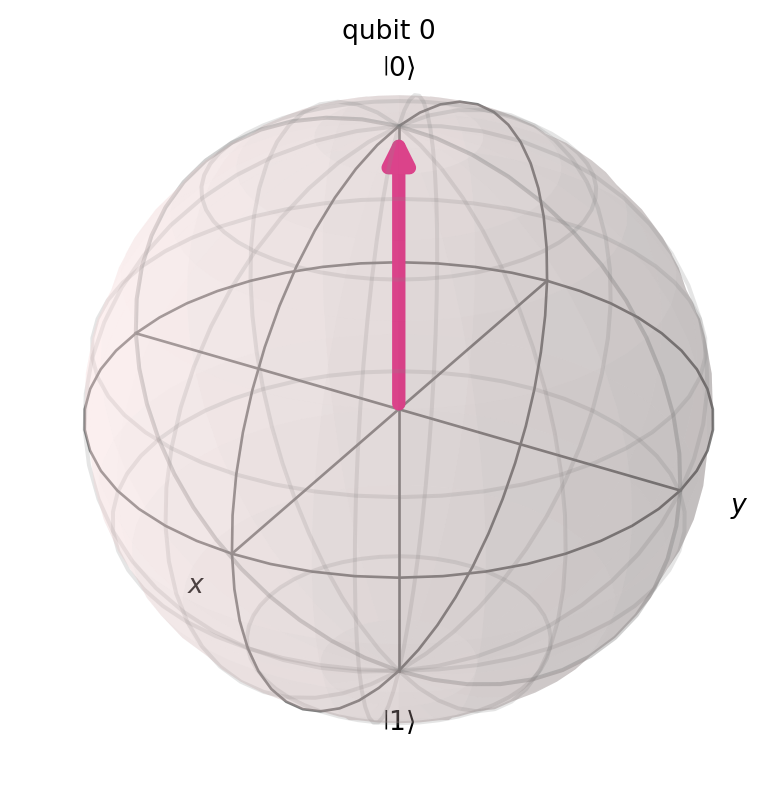
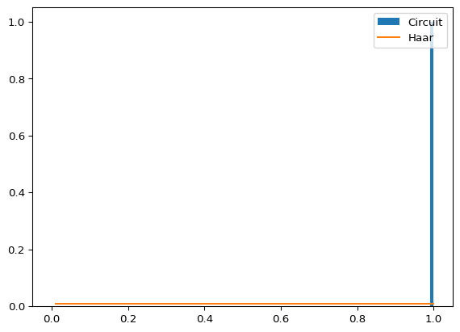
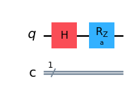
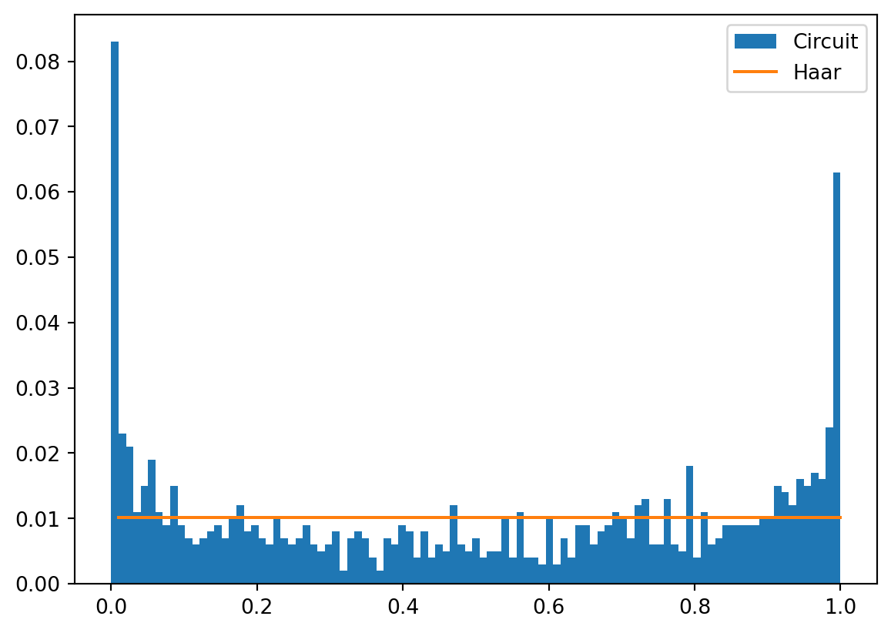
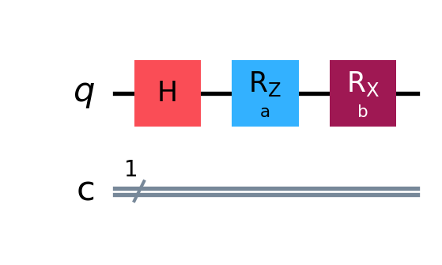
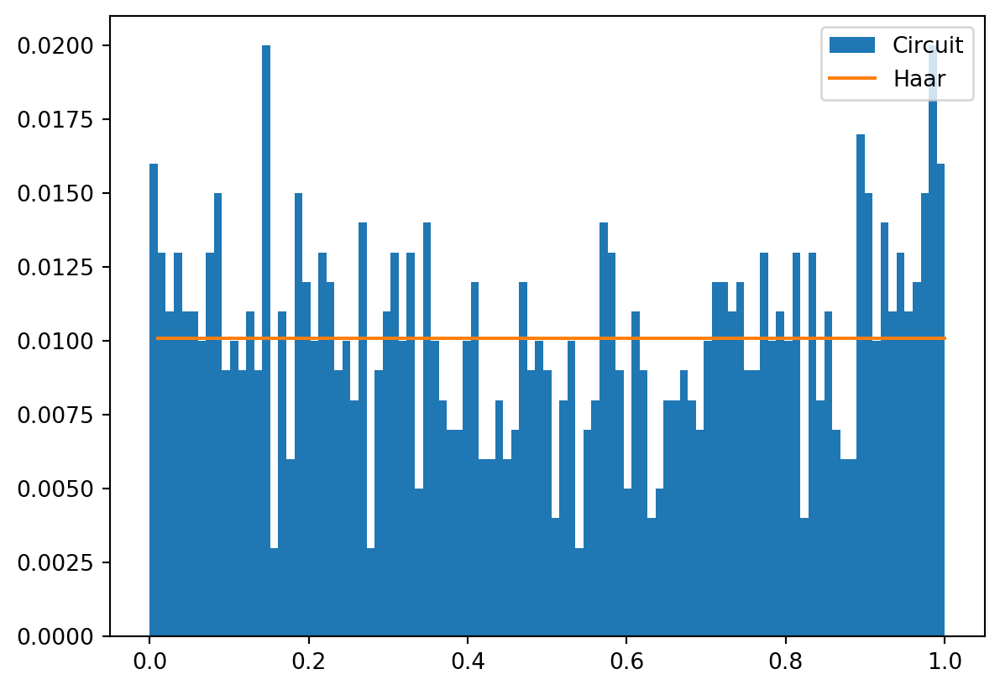
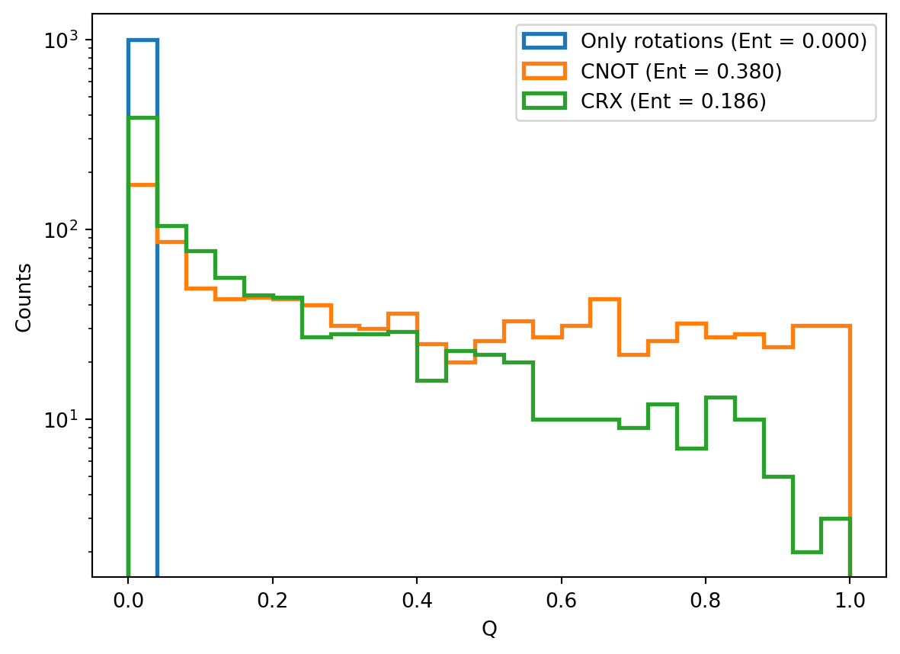
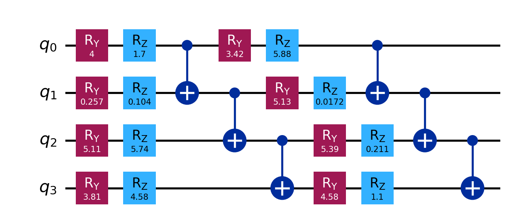
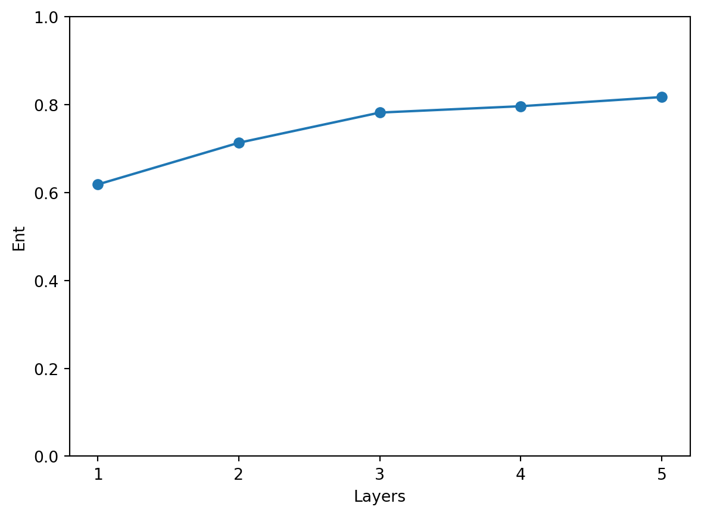

from qiskit import QuantumCircuit
qc = QuantumCircuit(1, 1)
qc.draw('mpl')
One simple approach is to compare the distribution of fidelities obtained by sampling a target PQC \(n\) number of times with randomly selected parameters, against the distribution of fidelities we would get over the same domain out of an ensemble of Haar random states.
Thus, \[ \text{Expr} = D_{KL}\left( \hat{P}_{PQC}(F; \theta) \| P_{Haar}(F)\right) = \sum_{j} \hat{P}_{PQC}(F_j; \theta)\log\left(\frac{\hat{P}_{PQC}(F_j; \theta)}{P_{\text{Haar}(F_j)}}\right) \]
where \(\hat{P}_{PQC}(F; \theta)\) is the estimated probability distribution of fidelities resulting while sampling states from a PQC with parameters \(\theta\). \(F_j\) represents the fidelity at \(j\)th bin.
Thus, we need to generate a histogram of the elements of \(F\). The output of this histogram is a set of bins \(B = \{(l_1, u_1), (l_2, u_2), \cdots \}\) where \(l_{j}\) (\(u_j\)) denotes the lower (upper) limit of bin \(j\). It also produces an empirical probability distribution function \(\mathrm{P}_{\text{PQC}}(j)\), which is simply the probability that a given value of \(F\) falls in a bin \(j\).
Let’s take the ansatz defined by an idle circuit as an example.
from qiskit import QuantumCircuit
qc = QuantumCircuit(1, 1)
qc.draw('mpl')
from qiskit.quantum_info import Statevector
from qiskit.visualization import plot_bloch_multivector
psi = Statevector.from_instruction(qc)
plot_bloch_multivector(psi)
No matter what we do, the ansatz won’t change, therefore its expressivity should be equal to none.
import numpy as np
import matplotlib.pyplot as plt
from qiskit_aer import AerSimulator
# Size of our histogram
dims = 100
num_qubits = 1
# Possible Bin
bins_list = []
for i in range(dims):
bins_list.append((i) / (dims - 1))
# Haar histogram
p_haar_hist = []
for i in range(dims - 1):
p_haar_hist.append(
(1 - bins_list[i]) ** (2**num_qubits - 1) - (1 - bins_list[i + 1]) ** (2**num_qubits - 1)
)
# Select the AerSimulator from the Aer provider
simulator = AerSimulator(method='matrix_product_state')
# Sample from circuit
nshot=1_024
nsamples=1_000
fidelities=[]
for _ in range(nsamples):
qc = QuantumCircuit(1, 1)
qc.measure(0,0)
job = simulator.run([qc], shots = nshot)
result = job.result()
count = result.get_counts()
# Fidelity
if '0' in count:
ratio=count['0']/nshot
else:
ratio=0
fidelities.append(ratio)
weights = np.ones_like(fidelities) / float(len(fidelities))
# Plot
bins_x = []
for i in range(dims - 1):
bins_x.append(bins_list[1] + bins_list[i])
plt.hist(
fidelities,
bins=bins_list,
weights=weights,
label="Circuit",
range=[0, 1],
)
plt.plot(bins_x, p_haar_hist, label="Haar")
plt.legend(loc="upper right")
plt.show()
We can see how all fidelities have probability zero except for fidelity 1, which means there is only one state we can render with this circuit. The metric works backwards: a distance of zero represents a fidelity probability landscape equal to the Haar one and therefore all states (pure) in the Hilbert space can be produced with the right set of parameters (\(\theta\)). Our idle circuit sits at the opposite end, dumping all of its mass into a single bin, so the divergence will take the largest value it can take here, \(log(N)\) where \(N\) is the number of bins selected for the histogram.
from scipy.special import rel_entr # For entropy calculation
pi_hist = np.histogram(fidelities, bins=bins_list, weights=weights, range=[0, 1])[0]
print("Expr = ", sum(rel_entr(pi_hist, p_haar_hist)))Expr = 4.595119850134598This matches the value we anticipated, keeping in mind that dims counts the edges of the histogram so the number of bins is one less.
np.log(dims - 1)np.float64(4.59511985013459)Being a distance, the score runs the other way around than one would expect: 0 is the best we can get, not the largest value.
We can see what would be the effect if we introduce a parameterized gate instead, something more complex with a free parameter such as:
from qiskit import QuantumCircuit
from qiskit.circuit import Parameter
a = Parameter('a')
qc = QuantumCircuit(1, 1)
qc.h(0)
qc.rz(a, 0)
qc.draw('mpl')
To get a fidelity out of two random parameter choices \(\theta\) and \(\phi\) we append the inverse of the circuit to itself, so that we run \(U^\dagger(\phi)U(\theta)\) and count how often we land back on the initial state. That frequency is precisely \(F = |\langle 0 |U^\dagger(\phi)U(\theta)| 0 \rangle|^2\).
from random import random
# Possible Bin
bins_list = []
for i in range(dims):
bins_list.append((i) / (dims - 1))
# Haar histogram
p_haar_hist = []
for i in range(dims - 1):
p_haar_hist.append(
(1 - bins_list[i]) ** (2**num_qubits - 1) - (1 - bins_list[i + 1]) ** (2**num_qubits - 1)
)
# Select the AerSimulator from the Aer provider
simulator = AerSimulator(method='matrix_product_state')
# Sample from circuit
fidelities=[]
for _ in range(nsamples):
theta = 2 * np.pi * random()
phi = 2 * np.pi * random()
qc = QuantumCircuit(1, 1)
qc.h(0)
qc.rz(theta, 0)
# Inverse of the circuit, on a second independent set of parameters
qc.rz(-phi, 0)
qc.h(0)
qc.measure(0,0)
job = simulator.run([qc], shots = nshot)
result = job.result()
count = result.get_counts()
# Fidelity
if '0' in count:
ratio=count['0']/nshot
else:
ratio=0
fidelities.append(ratio)
weights = np.ones_like(fidelities) / float(len(fidelities))
# Plot
bins_x = []
for i in range(dims - 1):
bins_x.append(bins_list[1] + bins_list[i])
plt.hist(
fidelities,
bins=bins_list,
weights=weights,
label="Circuit",
range=[0, 1],
)
plt.plot(bins_x, p_haar_hist, label="Haar")
plt.legend(loc="upper right")
plt.show()
pi_hist = np.histogram(fidelities, bins=bins_list, weights=weights, range=[0, 1])[0]
print("Expr = ", sum(rel_entr(pi_hist, p_haar_hist)))Expr = 0.26847625340398074We can extend this acting on more than one axis, which should end up with the maximum coverage over the bloch sphere for this one single qubit case.
from qiskit import QuantumCircuit
from qiskit.circuit import Parameter
a = Parameter('a')
b = Parameter('b')
qc = QuantumCircuit(1, 1)
qc.h(0)
qc.rz(a, 0)
qc.rx(b, 0)
qc.draw('mpl')
# Possible Bin
bins_list = []
for i in range(dims):
bins_list.append((i) / (dims - 1))
# Haar histogram
p_haar_hist = []
for i in range(dims - 1):
p_haar_hist.append(
(1 - bins_list[i]) ** (2**num_qubits - 1) - (1 - bins_list[i + 1]) ** (2**num_qubits - 1)
)
# Select the AerSimulator from the Aer provider
simulator = AerSimulator(method='matrix_product_state')
# Sample from circuit
fidelities=[]
for _ in range(nsamples):
theta, beta = 2 * np.pi * random(), 2 * np.pi * random()
phi, delta = 2 * np.pi * random(), 2 * np.pi * random()
qc = QuantumCircuit(1, 1)
qc.h(0)
qc.rz(theta, 0)
qc.rx(beta, 0)
# Inverse of the circuit, on a second independent set of parameters
qc.rx(-delta, 0)
qc.rz(-phi, 0)
qc.h(0)
qc.measure(0,0)
job = simulator.run([qc], shots = nshot)
result = job.result()
count = result.get_counts()
# Fidelity
if '0' in count:
ratio=count['0']/nshot
else:
ratio=0
fidelities.append(ratio)
weights = np.ones_like(fidelities) / float(len(fidelities))
# Plot
bins_x = []
for i in range(dims - 1):
bins_x.append(bins_list[1] + bins_list[i])
plt.hist(
fidelities,
bins=bins_list,
weights=weights,
label="Circuit",
range=[0, 1],
)
plt.plot(bins_x, p_haar_hist, label="Haar")
plt.legend(loc="upper right")
plt.show()
pi_hist = np.histogram(fidelities, bins=bins_list, weights=weights, range=[0, 1])[0]
print("Expr = ", sum(rel_entr(pi_hist, p_haar_hist)))Expr = 0.059464809298843894These plots should resemble those at the original work (Sim et al. 2019).
Expressivity tells us how much of the Hilbert space our ansatz can reach, but it says nothing about the kind of states it produces. A circuit made of single-qubit rotations only, one per wire, may cover every product state we can think of and still be simulable one qubit at a time. If we expect any advantage out of our parameterized circuit we should also ask how correlated the states it prepares are.
The companion metric proposed in the same work is the entangling capability, built on top of the Meyer-Wallach measure \(Q\) (Meyer and Wallach 2002). In the form derived by Brennen (Brennen 2003) it is simply an average over how mixed each qubit looks once the rest of the register is ignored
\[ Q(|\psi\rangle) = 2\left( 1 - \frac{1}{n}\sum_{k=1}^{n} \text{Tr}\left[\rho_k^2\right] \right) \]
where \(\rho_k = \text{Tr}_{\bar{k}}\left(|\psi\rangle\langle\psi|\right)\) is the reduced density matrix of qubit \(k\) after tracing out every other qubit, and \(\text{Tr}[\rho_k^2]\) its purity. A product state leaves every qubit pure (\(\text{Tr}[\rho_k^2] = 1\)) so \(Q = 0\), while a maximally entangled state leaves each qubit fully mixed (\(\text{Tr}[\rho_k^2] = 1/2\)) giving \(Q = 1\).
As before, this is a property of a single state and our ansatz produces a different one for each \(\theta\). So we average over the parameter space
\[ \text{Ent} = \frac{1}{|S|}\sum_{\theta_i \in S} Q(|\psi_{\theta_i}\rangle) \]
with \(S\) the set of sampled parameter vectors. Unlike the expressivity, here the scale is the intuitive one: \(0\) means the circuit never entangles anything and \(1\) that it always outputs maximally entangled states.
from qiskit.quantum_info import partial_trace
def meyer_wallach(circuit):
"""Q measure for the state prepared by an already bound circuit."""
n = circuit.num_qubits
psi = Statevector.from_instruction(circuit)
purities = 0
for k in range(n):
# Every qubit but k gets traced out
rho_k = partial_trace(psi, [q for q in range(n) if q != k])
purities += rho_k.purity().real
# Numerical noise may push the result marginally outside its [0, 1] range
return float(np.clip(2 * (1 - purities / n), 0, 1))Let’s check it against states we already know the answer for.
# A product state, no interaction whatsoever
product = QuantumCircuit(2)
product.h(0)
product.ry(np.pi / 3, 1)
# A Bell pair
bell = QuantumCircuit(2)
bell.h(0)
bell.cx(0, 1)
# A GHZ state over four qubits
ghz = QuantumCircuit(4)
ghz.h(0)
for q in range(3):
ghz.cx(q, q + 1)
for name, circuit in [("Product", product), ("Bell", bell), ("GHZ", ghz)]:
print(f"Q({name}) = {meyer_wallach(circuit):.3f}")Q(Product) = 0.000
Q(Bell) = 1.000
Q(GHZ) = 1.000Now we can do with the entangling capability what we did with the expressivity: sample random parameters and look at the resulting distribution. Let’s compare three two-qubit ansätze that differ only in how (or whether) the wires talk to each other.
def only_rotations(rng):
"""Two independent qubits, nothing connects them."""
qc = QuantumCircuit(2)
for q in range(2):
qc.rx(rng.uniform(0, 2 * np.pi), q)
qc.rz(rng.uniform(0, 2 * np.pi), q)
return qc
def with_cnot(rng):
qc = only_rotations(rng)
qc.cx(0, 1)
return qc
def with_controlled_rotation(rng):
qc = only_rotations(rng)
qc.crx(rng.uniform(0, 2 * np.pi), 0, 1)
return qcdef entangling_capability(builder, nsamples=1_000, seed=1234):
rng = np.random.default_rng(seed)
return np.array([meyer_wallach(builder(rng)) for _ in range(nsamples)])
samples = {
"Only rotations": entangling_capability(only_rotations),
"CNOT": entangling_capability(with_cnot),
"CRX": entangling_capability(with_controlled_rotation),
}
for label, q_values in samples.items():
plt.hist(
q_values,
bins=np.linspace(0, 1, 26),
histtype="step",
linewidth=2,
label=f"{label} (Ent = {q_values.mean():.3f})",
)
plt.yscale("log")
plt.xlabel("Q")
plt.ylabel("Counts")
plt.legend(loc="upper right")
plt.show()
The circuit without a two-qubit gate piles up at \(Q = 0\), as expected. The CNOT version spreads all the way to maximally entangled states, and the parameterized CRX sits in between: whenever its angle lands close to \(0\) or \(2\pi\) the gate barely entangles, so low \(Q\) values remain frequent.
The usual knob to turn is depth. Repeating a rotation block followed by an entangling ladder should progressively spread correlations across the register.
def hardware_efficient(rng, layers, num_qubits=4):
qc = QuantumCircuit(num_qubits)
for _ in range(layers):
for q in range(num_qubits):
qc.ry(rng.uniform(0, 2 * np.pi), q)
qc.rz(rng.uniform(0, 2 * np.pi), q)
for q in range(num_qubits - 1):
qc.cx(q, q + 1)
return qc
hardware_efficient(np.random.default_rng(0), layers=2).draw('mpl')
layers = range(1, 6)
ent_per_layer = [
entangling_capability(
lambda rng, d=depth: hardware_efficient(rng, d), nsamples=300
).mean()
for depth in layers
]
plt.plot(list(layers), ent_per_layer, marker="o")
plt.xlabel("Layers")
plt.ylabel("Ent")
plt.xticks(list(layers))
plt.ylim(0, 1)
plt.show()
Most of the gain comes from the very first layers and the curve flattens quickly afterwards, which is a recurring observation when picking an ansatz: past a certain depth we keep paying in gates, noise and trainability without getting anything new in return.
It is tempting to assume that a circuit entangling a lot is automatically expressive, but the two quantities are independent enough to be worth measuring separately. We can reuse the machinery above, this time computing the fidelities directly from the statevectors instead of sampling shots. It is the same quantity as before, only free of shot noise.
def expressivity(builder, num_qubits, nsamples=1_000, seed=1234):
rng = np.random.default_rng(seed)
bins_list = [i / (dims - 1) for i in range(dims)]
N = 2**num_qubits
p_haar_hist = [
(1 - bins_list[i]) ** (N - 1) - (1 - bins_list[i + 1]) ** (N - 1)
for i in range(dims - 1)
]
fidelities = []
for _ in range(nsamples):
psi = Statevector.from_instruction(builder(rng))
phi = Statevector.from_instruction(builder(rng))
fidelities.append(np.abs(psi.inner(phi)) ** 2)
weights = np.ones(nsamples) / nsamples
pqc_hist = np.histogram(fidelities, bins=bins_list, weights=weights, range=[0, 1])[0]
return sum(rel_entr(pqc_hist, p_haar_hist))ansatze = [
("Only rotations", only_rotations),
("CNOT", with_cnot),
("CRX", with_controlled_rotation),
("2 layers", lambda rng: hardware_efficient(rng, 2, num_qubits=2)),
("3 layers", lambda rng: hardware_efficient(rng, 3, num_qubits=2)),
]
print(f"{'Ansatz':<18}{'Expr':>8}{'Ent':>8}")
for label, builder in ansatze:
print(
f"{label:<18}"
f"{expressivity(builder, num_qubits=2):>8.3f}"
f"{entangling_capability(builder).mean():>8.3f}"
)Ansatz Expr Ent
Only rotations 0.129 0.000
CNOT 0.129 0.380
CRX 0.065 0.186
2 layers 0.059 0.363
3 layers 0.050 0.390Remember these are finite-sample estimates over a binned histogram, so the absolute value of Expr carries a bias and only the comparison between rows is meaningful. Two things stand out.
The first one is that Only rotations and CNOT share exactly the same expressivity while their entangling capability could not be more different. The reason is that the CNOT sits at the very end of the circuit, acting as a fixed unitary common to every sample, and a common unitary leaves all the overlaps \(|\langle\psi_{\theta_i}|\psi_{\theta_j}\rangle|^2\) untouched. Expressivity simply cannot see it, entangling capability can.
The second one is that the CRX ansatz is more expressive than the CNOT one while entangling roughly half as much. Adding correlations and covering the Hilbert space are related but different goals, and a good ansatz is usually the one reaching enough of both while staying shallow, since pushing either metric to its limit lands us precisely in the regime where barren plateaus (McClean et al. 2018) start to show up.